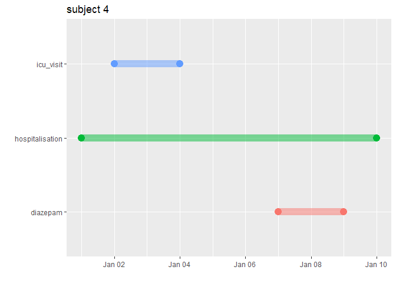

Does my cohort picked the correct number patients? Am I calculating an intersection in the right way? Is that the expected value for treatment duration? It just takes one incorrect parameter to get incoherent results in a pharmacoepidemiological study, and it is very challenging to test calculations on huge and complex databases.
That is why TestGenerator is useful to push a small sample of patients to unit test a study on the OMOP-CDM. It includes tools to create a blank CDM with a complete vocabulary and check if the code is doing what we expect in very specific cases.
This package is based on the unit testing written for the Eramus MC Ranitidine Study.
Example
The user can provide an Excel file (link to sample) or a set of CSV files that represent tables of the OMOP-CDM, with a micro population of just 8 patients for testing purposes.
readPatients() will read either Excel or CSVs, and then saves the data in a JSON file. This is useful if the user wants to create more than one Unit Test Definitions. If the parameter outputPath is NULL The files are saved in the testthat/testCases folder of the package. Alterna
TestGenerator::readPatients(filePath = "~/pathto/testPatients.xlsx",
testName = "test",
outputPath = NULL,
cdmVersion = "5.3")Alternatively, the user can use the functions readPatients.xl or readPatients.csv directly.
TestGenerator::readPatients.xl(filePath = "~/pathto/testPatients.xlsx",
testName = "test",
outputPath = NULL,
cdmVersion = "5.3")
TestGenerator::readPatients.csv(filePath = "~/pathto/csv/files",
testName = "test",
outputPath = NULL,
cdmVersion = "5.3",
reduceLargeIds = FALSE)patientCDM() pushes one of those Unit Test Definitions into a blank CDM reference with a complete version of the vocabulary. If the pathJSON parameter is NULL, TestGenerator will look for the JSON test files in the testthat/testCases folder.
cdm <- TestGenerator::patientsCDM(pathJson = NULL,
testName = "test",
cdmVersion = "5.3")Now the user has a CDM reference with a complete vocabulary and just 8 patients.
filePath <- system.file("extdata/icu_sample_population.xlsx",
package = "TestGenerator")
outputPath <- file.path(tempdir(), "test")
dir.create(outputPath)
TestGenerator::readPatients(filePath = filePath,
testName = "test",
outputPath = outputPath,
cdmVersion = "5.3")
#> ✔ Unit Test Definition Created Successfully: 'test'
cdm <- TestGenerator::patientsCDM(pathJson = outputPath,
testName = "test",
cdmVersion = "5.3")
#> ! cdm name not specified and could not be inferred from the cdm source table
#> ✔ Patients pushed to blank CDM successfully
cdm$person
#> # Source: table<main.person> [8 x 18]
#> # Database: DuckDB v0.9.1 [cbarboza@Windows 10 x64:R 4.3.1/C:\Users\cbarboza\AppData\Local\Temp\RtmpsTj0bV\file38ac29545741.duckdb]
#> person_id gender_concept_id year_of_birth month_of_birth day_of_birth
#> <int> <int> <int> <int> <int>
#> 1 1 8532 1980 NA NA
#> 2 2 8507 1990 NA NA
#> 3 3 8532 2000 NA NA
#> 4 4 8507 1980 NA NA
#> 5 5 8532 1990 NA NA
#> 6 6 8507 2000 NA NA
#> 7 7 8532 1980 NA NA
#> 8 8 8507 1990 NA NA
#> # ℹ 13 more variables: birth_datetime <dttm>, race_concept_id <int>,
#> # ethnicity_concept_id <int>, location_id <int>, provider_id <int>,
#> # care_site_id <int>, person_source_value <chr>, gender_source_value <chr>,
#> # gender_source_concept_id <int>, race_source_value <chr>,
#> # race_source_concept_id <int>, ethnicity_source_value <chr>,
#> # ethnicity_source_concept_id <int>The reference can be used to create a cohort and create unit tests.
test_cohorts <- system.file("extdata",
"test_cohorts",
package = "TestGenerator")
cohort_set <- CDMConnector::readCohortSet(test_cohorts)
cdm <- CDMConnector::generate_cohort_set(cdm,
cohort_set,
name = "test_cohorts")
#> ℹ Generating 3 cohorts
#> ℹ Generating cohort (1/3) - diazepam✔ Generating cohort (1/3) - diazepam [323ms]
#> ℹ Generating cohort (2/3) - hospitalisation✔ Generating cohort (2/3) - hospitalisation [288ms]
#> ℹ Generating cohort (3/3) - icu_visit✔ Generating cohort (3/3) - icu_visit [187ms]
cohortAttrition <- CDMConnector::attrition(cdm[["test_cohorts"]])
excluded_records <- cohortAttrition %>%
pull(excluded_records) %>%
sum()
expect_equal(excluded_records, 0)With graphCohort() it is possible to visualise the timeline for particular patient.
diazepam <- cdm[["test_cohorts"]] %>%
filter(cohort_definition_id == 1) %>%
collect()
hospitalisation <- cdm[["test_cohorts"]] %>%
filter(cohort_definition_id == 2) %>%
collect()
icu_visit <- cdm[["test_cohorts"]] %>%
filter(cohort_definition_id == 3) %>%
collect()
TestGenerator::graphCohort(subject_id = 4, list("diazepam" = diazepam,
"hospitalisation" = hospitalisation,
"icu_visit" = icu_visit))
#> Warning in geom_segment(aes(x = cohort_start_date, y = cohort, xend =
#> cohort_end_date, : Ignoring unknown aesthetics: fill